Jednodílný měch je zařízení, plnící současně dvě funkce – čerpání vzduchu a jeho akumulaci – shromažďování. Pro zajištění stálé dodávky vzduchu nástroji v tomto případě nestačí jen jeden měch tohoto typu, potřebné jsou minimálně dva. V okamžiku čerpání – nasávání vzduchu do měchu není tento schopen z principu zajistit tlak, tlak se tedy cyklicky mění. Staré varhany s jednodílnými měchy byly vybaveny většinou celou soustavou takových měchů, které byly umístěny vedle sebe, někdy i nad sebou. Všechny měchy pracovaly do společného vzduchovodu, který vedl přímo ke vzdušnici nástroje. Kalkanti často obsluhovali měchy pomocí nohou, pak byly měchy uspořádány v párech, aby jeden kalkant mohl střídavě šlapat dva měchy přešlapováním z nohy na nohu. Základními typy jednodílných měchů jsou: Z jejich popisu je dobře patrný problém cyklických změn tlaku na výstupu
měchu a z toho vyplývající nutnost použití více měchů pro zabezpečení
stálé dodávky vzduchu nástroji. |
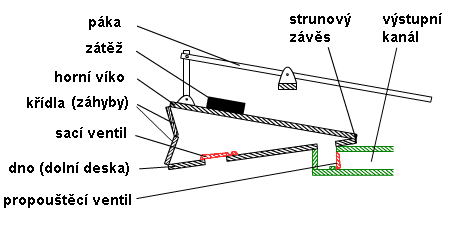
Obě víka jsou po stranách spojeny pomocí záhybů (skladů),
vytvořených z desek (křídel), které jsou v hranách pohyblivě a vzduchotěsně
spojeny kůží (na obrázku jsou znázorněny jen desky, spojující víka vpředu
– naproti závěsu). Takto skonstruovaný měch představuje uzavřený zásobník
vzduchu s proměnným objemem, který může sloužit k shromažďovaní a stlačování
vzduchu. V jeho dolní části je dvojice otvorů – vstupní (sací) a výstupní
(výfukový). Vstupní otvor (na obrázku vlevo) je přikryt klapkou, tvořící
jednocestný (zpětný) ventil. Druhý směrový ventil je ve výstupním kanále
(vzduchovodu). |
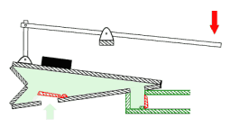Činnost měchu je jednoduchá. Zatlačením potřebnou silou na páku (kalkováním) se zvedne jedna strana (volná) horního víka měchu. Tím se zvětší vnitřní objem měchu a vznikne podtlak (světlezelená barva na obrázku). Díky tomu se nadzvedne klapka zpětného ventilu a odkrytým otvorem proudí dovnitř měchu vzduch z okolí. Druhý zpětný ventil na výstupu měchu je v tuto chvíli uzavřen, nedovolí tedy měchu nasávat vzduch z výstupního kanálu. 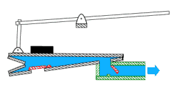Když se horní víko měchu dostane do krajní polohy, kalkant přestane tlačit na páku a víko začne klesat díky vlastní tíze a tíze přidaných závaží. Obrázek ukazuje pohyb vzduchu v okamžiku poklesu víka. Výstupní zpětný ventil je díky přetlaku v měchu otevřen a umožňuje volný odtok vzduchu ke spotřebě. Současně je uzavřen sací ventil, který teď brání uniknutí vzduchu do okolí přes vstupní otvor. 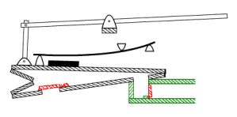Velikost tlaku vzduchu, dodávaného měchem, je závislá na síle, která působí na horní víko. Proto se na víko přidávají závaží nebo se tlak zvyšuje pomocí pružiny (obrázek vlevo). |
Následující animace představuje klínový měch při
práci, je z ní dobře patrná spolupráce obou zpětných ventilů: |
Z principu funkce klínového měchu vyplývá jeho neschopnost zajistit nepřerušenou dodávku vzduchu o stálém tlaku. Analyzujeme-li podrobněji jednotlivé fáze činnosti měchu, najdeme na jeho výstupu stálý tlak jen po dobu klesání horního víka (ani tento tlak není zcela konstantní – díky pootáčení víka kolem závěsu se mění úhel pod kterým působí tíha závaží a tím i částečně tlak uvnitř měchu). Ve fázi sání je ale uvnitř měchu naopak podtlak. Tato nevýhoda kolísavého tlaku může být odstraněna jen použitím dvojice měchů (minimálně), které budou pracovat střídavě (v „protifázi“). Příklad takového uspořádání ukazují následující ilustrace. 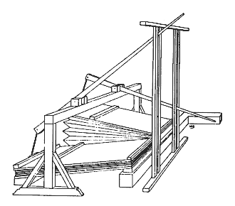První ukazuje dvojici klínových měchů, uložených vodorovně vedle sebe. Jeden je natažený, druhý splasklý. Obsluhovány jsou kalkantem (kalkanty) pomocí ručních pák, které se pohybují ve svislých vodítkách. Oba měchy jsou připojeny na společný vzduchovod.
|
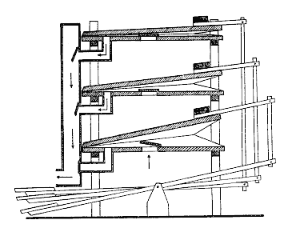V
druhém případě jsou měchy svisle nad sebou a obsluhovány jsou pomocí nožních
pák. Opět pracují do společného kanálu, naznačeny jsou i zpětné ventily.
Horní dva měchy dodávají právě vzduch do kanálu, dolní měch je ve fázi
nasávání (má otevřený sací otvor a uzavřený výstupní). |
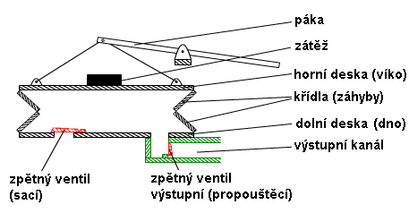
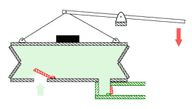Princip
funkce je shodný s měchem klínovým – tlak na páku způsobí zvednutí horního
víka a natažení harmoniky měchu. Zvětšení objemu měchu způsobí podtlak
uvnitř, který se vyrovná přes sací ventil s tlakem okolním – měch nasaje
vzduch. |
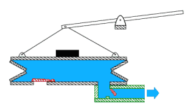Když
víko dosáhne horní polohy, páka se uvolní a víko klesá dolů (opět díky
vlastní váze a tíze přidaných závaží, které slouží k docílení potřebného
tlaku). Stlačený vzduch uzavře sací ventil a přes propouštěcí ventil volně
proudí do výstupního kanálu. |
Na rozdíl od klínového měchu
vodorovný měch udržuje opravdu konstantní tlak po celou dobu poklesu víka
(u klínového měchu se tento tlak mírně mění díky proměnnému úhlu mezi
víky). Následující animace ukazuje tento měch v pohybu: |
Stejně jako u ostatních jednodílných měchů je i u
tohoto měchu nutno pro nepřetržitou dodávku vzduchu o stálém tlaku použít
minimálně dvojice měchů, které budou pracovat střídavě. Tento typ měchu
není příliš rozšířen, je však základem konstrukce dvojdílných
zásobních měchů. |
Skříňový měch.Skříňový měch tvoří dvě dřevěné skříně, zasazené těsně
do sebe. Vnější je pevná, vnitřní (menší) se volně pohybuje: |
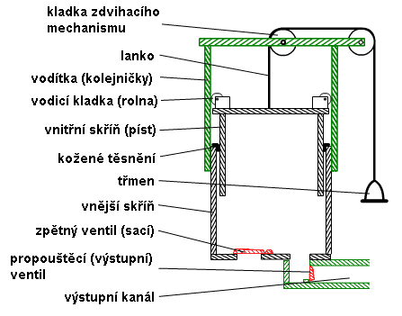
Ve vnější skříni se nacházejí vstupní (sací) a propouštěcí (výstupní – výfukové) ventily. Vnitřní skříň se pohybuje jako píst ve svislém směru. Obě skříně do sebe těsně zapadají a v hranách jsou navíc utěsněny koženým těsněním. Vnitřní skříň je zvedána pomocí lanka, které vede přes kladky ke stanovišti kalkanta a je opatřeno rukojetí pro ruční kalkování nebo třmenem, do kterého kalkant vkládá chodidlo při kalkování nohou (na obrázku). Klesání skříně je samočinné (klesá vlastní vahou případně s přidaným závažím na horním víku) po zániku síly, která ji zvedla (když kalkant uvolní lanko). Svislý pohyb vnitřní skříně je stabilizován pomocí vodítek (kolejniček), po kterých se pohybují kladky, připevněné k jejímu víku. Princip funkce skříňového měchu je obdobný jako u ostatních jednodílných měchů, tj. měchu klínového a vodorovného. Následující obrázek ukazuje dvě hlavní fáze práce měchu. Nalevo je
sání – kalkant táhne za lanko, což způsobuje zvedání vnitřní skříně,
zvětšování objemu měchu a vznik podtlaku uvnitř. Výstupní propouštěcí
ventil se uzavírá a brání tak zpětnému toku vzduchu z výstupního kanálu
do měchu. Vnějším přetlakem se otevírá sací ventil a měch se plní vzduchem. |
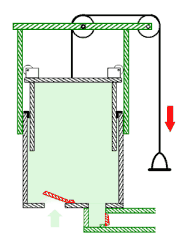 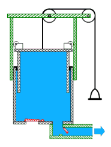 |
Na pravém obrázku je fáze stlačování vzduchu. Lanko je uvolněno a skříň klesá pod vlastní vahou při současném stlačování vzduchu uvnitř. Sací ventil se přetlakem uzavře, propouštěcí otevře a vzduch proudí volně do výstupního kanálu ke spotřebě. Na následující animaci je tentýž měch zachycen v pohybu: |
Stejně jako u ostatních jednodílných měchů je i u
tohoto měchu nutno pro nepřetržitou dodávku vzduchu o stálém tlaku použít
minimálně dvojice měchů, které budou pracovat střídavě. |
Na souvisejících stránkách o vzduchovém
hospodářství varhan naleznete popis dvoudílných
měchů a elektrického ventilátoru.
V samostatné kapitole pak popis tremola.
|
Poznámka: Tato stránka je součástí Anatomie varhan ®, © Ing. Petr Bernat. Všechny animace © Konrad Zacharski